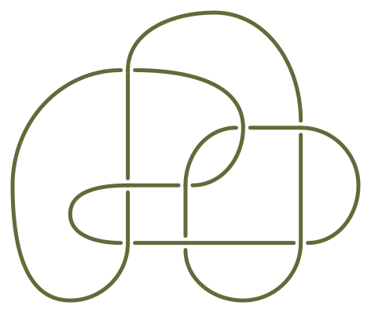
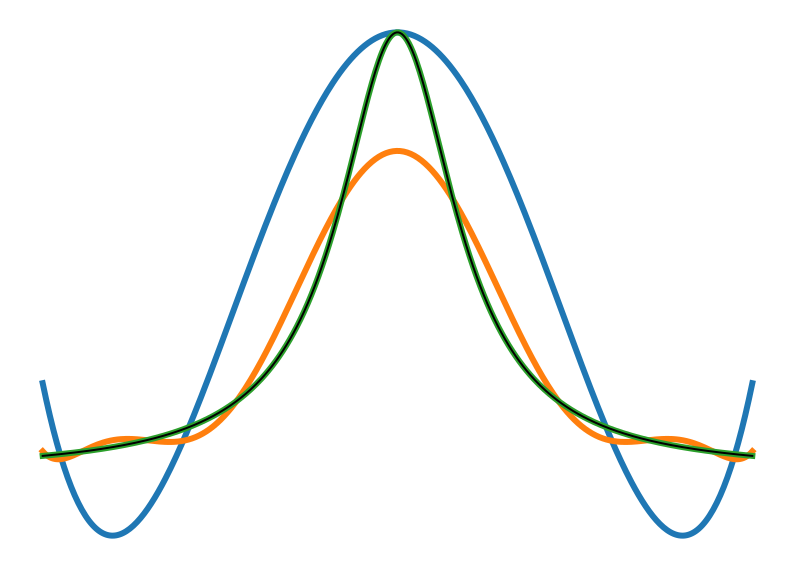

For an experimental math module on Knot Theory I developed a reinforcement learning modal using python and its powerful
libraries
that tries and simplify knots (mathematical knots) and eventually identify them from a knot data bank

Scientific Computing with Python
For a practical module on Numerical Mathematics, I implemented and analyzed various numerical methods
using Python and its scientific libraries, focusing on solving linear systems, interpolation, integration,
and root-finding problems.

LaTex notes
Clean LaTex Notes that I took in my lectures using Vim12.